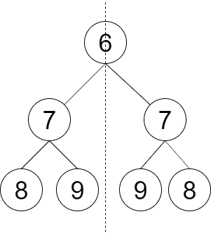
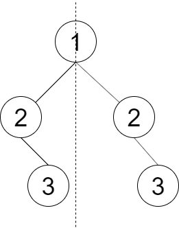

剑指 Offer 28. 判断对称二叉树
递归比较「一对」子树：L 与 R 互为镜像当且仅当值相等，且 L 的外侧对 R 的外侧、内侧对内侧。
思路
- 不是比
left == right，而是把(左子树, 右子树)当成一对传进递归：mirror(L, R)。 - 两个都空 → 对称；一空一非空 → 不对称；值不等 → 不对称。
- 递归下探时交叉配对：
mirror(L.left, R.right)（外侧对外侧）、mirror(L.right, R.left)（内侧对内侧）。 - 根结点自己不用比，空树直接返回 true。
图解
最优解
1class Solution {2 public boolean checkSymmetricTree(TreeNode root) {3 // 空树也对称4 if (root == null) return true;5 return mirror(root.left, root.right);6 }7 8 // 判断 L、R 两棵子树是否互为镜像9 boolean mirror(TreeNode L, TreeNode R) {10 if (L == null && R == null) return true;11 if (L == null || R == null) return false;12 // 值相等，且 L 的外侧(L.left) 对 R 的外侧(R.right)、内侧对内侧13 return L.val == R.val && mirror(L.left, R.right) && mirror(L.right, R.left);14 }15}题目
请设计一个函数判断一棵二叉树是否 轴对称 。
示例 1：

输入：root = [6,7,7,8,9,9,8] 输出：true 解释：从图中可看出树是轴对称的。
示例 2：

输入：root = [1,2,2,null,3,null,3] 输出：false 解释：从图中可看出最后一层的节点不对称。
提示：
0 <= 节点个数 <= 1000
注意：本题与主站 101 题相同：https://leetcode.cn/problems/symmetric-tree/
题面取自力扣当前版本。
数据快照 2026-11-04。题面版权归力扣所有，本站点仅供本人学习使用，请勿对外发布。